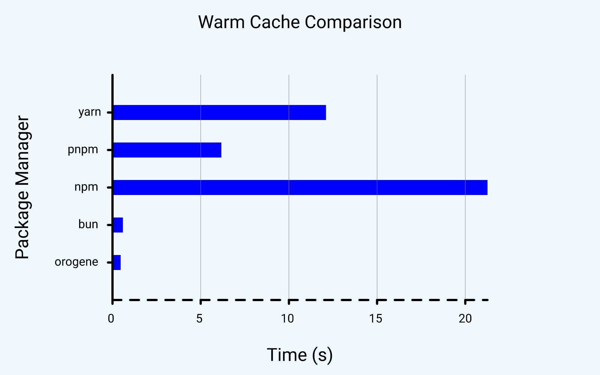
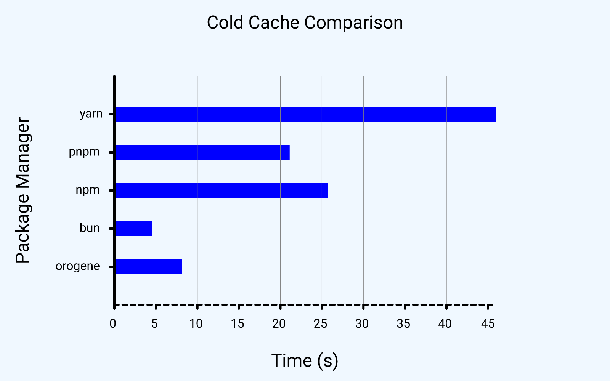
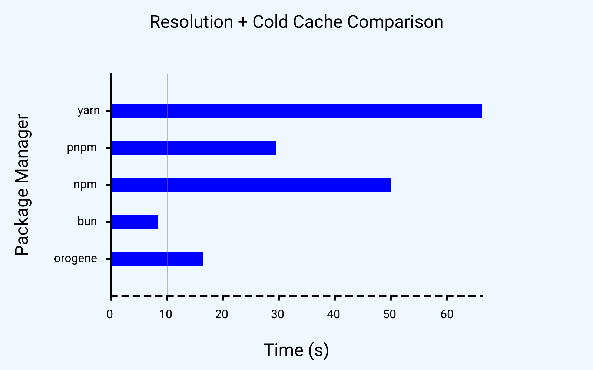

orogene
Benchmarks
Even at this early stage, orogene is very fast. These benchmarks are all on ubuntu linux running under wsl2, with an ext4 filesystem.
All benchmarks are ordered from fastest to slowest (lower is better):
Warm Cache
This test shows performance when running off a warm cache, with an
existing lockfile. This scenario is common in CI scenarios with caching
enabled, as well as local scenarios where node_modules is wiped out in
order to "start over" (and potentially when switching branches).
Of note here is the contrast between the subsecond (!) installation by orogene, versus the much more noticeable install times of literally everything else.

Cold Cache
This test shows performance when running off a cold cache, but with an existing lockfile. This scenario is common in CI scenarios that don't cache the package manager caches between runs, and for initial installs by teammates on relatively "clean" machines.

Initial Installs
This reflects use cases where a lockfile hasn't been generated and caches are still cold. While relatively unusual, this can give an idea of what the experience is like when adding one or more dependencies, or when regenerating lockfiles from scratch.

Memory Usage
Another big advantage of Orogene is significantly lower memory usage compared to other package managers, with each scenario below showing the peak memory usage (resident set size) for each scenario (collected with /usr/bin/time -v):
| Package Manager | no lockfile, no cache | lockfile, cold cache | lockfile, warm cache | existing node_modules |
|---|---|---|---|---|
orogene |
266.8 mb | 155.2 mb | 38.6 mb | 35.5 mb |
bun |
2,708.7 mb | 792.1 mb | 34.5 mb | 25.8 mb |
pnpm |
950.9 mb | 638.4 mb | 260.1 mb | 168.7 mb |
npm |
1,048.9 mb | 448.2 mb | 833.7 mb | 121.7 mb |
yarn |
751.1 mb | 334.4 mb | 251.9 mb | 129.3 mb |
Caveat Emptor
At the speeds at which orogene operates, these benchmarks can vary widely because they depend on the underlying filesystem's performance. For example, the gaps might be much smaller on Windows or (sometimes) macOS. They may even vary between different filesystems on Linux/FreeBSD. Note that orogene uses different installation strategies based on support for e.g. reflinking (btrfs, APFS, xfs).